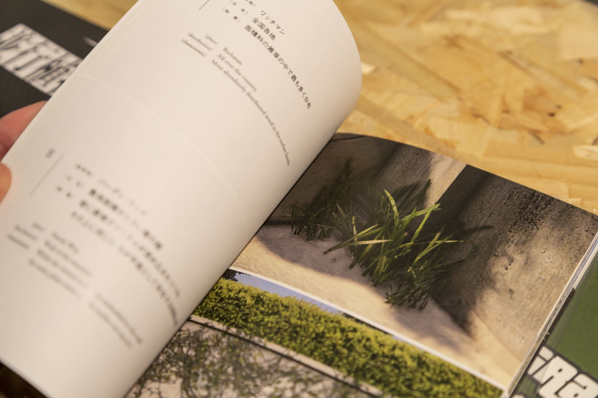

5 Nature Documentary
//general introduction about the creation of a synthetic forms of nature, ecological issues, creation of virtual sublime, flora and fauna that are usually props that become the focus of the player’s explorations, “virtual world naturalism”….
Grand Theft Auto V’s Botany by 高橋遼平 Ryohei Takahashi
 artwork text
San Andreas Streaming Deer Cam by Brent Watanabe
 artwork text
artwork text
Getting There
 Mount Chiliad is located in the Chiliad Mountain State Wilderness, and it is the tallest mountain in the game at 798m above sea level. The state park is home to lots of wildlife such as deer and mountain lions.
Mount Chiliad is located in the Chiliad Mountain State Wilderness, and it is the tallest mountain in the game at 798m above sea level. The state park is home to lots of wildlife such as deer and mountain lions.
Tutorial
Preparation and Setup
Install Windows 11
Download and install Steam (with a copy of GTA V or buy the game if you do not have it. GTA V is 100+ GB so it will take a few hours depending on your internet connections)
Download Script Hook V, go to the bin folder and copy
dinput8.dllandScriptHookV.dllfiles into your GTA V directoryC:\Program Files (x86)\Steam\steamapps\common\Grand Theft Auto VDownload Script Hook V dot net, copy the
ScriptHookVDotNet.asifile andScriptHookVDotNet3.dllfiles into your GTA V directoryC:\Program Files (x86)\Steam\steamapps\common\Grand Theft Auto VCreate a new folder in GTA V directory and call it “scripts”.
Download and install Visual Studio Community (free version of VS). Open Visual Studio and check the .NET desktop development package and install it
Run GTA V and test if Script Hook V is working by pressing
F4. This should toggle the console view. Try to type Help() and pressENTERto get a list of available commands.
Creating a Mod File
Open Visual Studio
Select File > New > Project
Select Visual C# and Class Library (.NET Framework)
Give a custom file name (e.g. moddingTutorial)
Rename public class Class1 as “moddingTutorial” in the right panel Solution Explorer and click Yes on the pop-up window
In the same panel go to References and click add References…
Click on > Browse > browse to Downloads
Select ScriptHookedVDotNet >
ScriptHookVDotNet3.dlland add it
Go to > Assemblies and search for “forms” and select
System.Windows.formsSearch for “drawing” and select
System.Drawing
- In your code file add the following lines on top:
- Modify class moddingTutorial to the following:
namespace moddingTutorial
{
public class moddingTutorial : Script
{
public moddingTutorial()
{
this.Tick += onTick;
this.KeyUp += onKeyUp;
this.KeyDown += onKeyDown;
}
private void onTick(object sender, EventArgs e)
{
}
private void onKeyUp(object sender, KeyEventArgs e)
{
}
private void onKeyDown(object sender, KeyEventArgs e)
{
if (e.KeyCode == Keys.H)
{
Game.Player.ChangeModel(PedHash.Cat);
}
}
}
}Save file
Go to Documents > Visual Studio > Project > moddingTutorial > moddingTutorial >
moddingTutorial.csCopy the .cs file in the GTA V directory inside the scripts folder
Open GTA V, run the game in Story Mode (mods are only allowed in single player mode, not in GTA Online) and press ‘H’ to see if the game turns your avatar into a cat
- Note: every time you make changes to your .cs file in the scripts folder you can hit
F4to open the console, typeReload()in the console for the program to reload the script and test again the changes.
onTick, onKeyUp and onKeyDown
The main events of Script Hook V Dot Net are onTick, onKeyUp and onKeyDown. Script Hook V Dot Net will invoke your functions whenever an event is called.
The code within the onTick brackets is executed every interval milliseconds (which is by default 0), meaning that the event will be executed at every frame, for as long as the game is running.
private void onTick(object sender, EventArgs e)
{
//code here will be executed every frame (or per usef defined interval)
}If your function is written inside onKeyDown (withiin the curly brackets following onKeyUp(object sender, KeyEventArgs e){}), your code will be executed every time a key is pressed. If your function is written inside onKeyUp, your code will be executed every time a key is released.
private void onKeyUp(object sender, KeyEventArgs e)
{
//code here will be executed whenever a key is released
}
private void onKeyDown(object sender, KeyEventArgs e)
{
//code here will be executed whenever a key is pressed
} We can specify which code is executed based on what keys are pressed/released
Change Player Model
The player character is controlled as Game.Player. Game.Player can perform different functions, including changing the avatar model.
Change the 3D model of your character by using the ChangeModel function.
The function needs a model ID, in order to load the model file of our game character.
You can browse through this list of models to find the one you want to try (note: not all models seem to load properly).

These models are all PedHashes, basically ID numbers within the PedHash group. Copy the name of the model below the image and add it to PedHash.
For example if you choose the model Poodle, you’ll need to write PedHash.Poodle.
To change the model of your player character into a poodle you can write the following function:
add it in your .cs file in the onKeyDown event, triggered by the pressing of the ‘h’ key:
Example code
using System;
using System.Collections.Generic;
using System.Linq;
using System.Text;
using System.Threading.Tasks;
using GTA;
using GTA.Math;
using System.Windows.Forms;
using System.Drawing;
using GTA.Native;
namespace moddingTutorial
{
public class moddingTutorial : Script
{
public moddingTutorial()
{
this.Tick += onTick;
this.KeyUp += onKeyUp;
this.KeyDown += onKeyDown;
}
private void onTick(object sender, EventArgs e) //this function gets executed continuously
{
}
private void onKeyUp(object sender, KeyEventArgs e)//everything inside here is executed only when we release a key
{
}
private void onKeyDown(object sender, KeyEventArgs e) //everything inside here is executed only when we press a key
{
//when pressing 'H'
if(e.KeyCode == Keys.H)
{
//change player char into a different model
Game.Player.ChangeModel(PedHash.Poodle);
}
}
}
}Try to select different models and assign them to different keys to change the model of your character. Use keys that are not already implemented in the game controls to avoid clashes with built in operations.

Tasks
Our character can be controlled by our script, and given actions that override manual control of the player. These actions are called Tasks and in order to assign tasks to our characters we have to define our Game.Player as Game.Player.Character. The Game.Player.Character code gets the specific model the player is controlling.
Now we can give tasks to the character by adding the Task function: Game.Player.Character.Task.
Finally we can specify what task to give the character by choosing a task from TaskInvoker list of possible actions.
Jump:
Wander around:

Hands up for 3000 milliseconds:
Turn towards the camera:
Some of the tasks are temporary and accept a time parameter (in milliseconds). Others are persistent, meaning they will keep being executed until the task is actively stopped. To stop a task you can use the ClearAllImmediately(); command:
Task Sequences
You can create sequence of multiple tasks by using TaskSequence and the PerformSequence function.
Create a new TaskSequence with a custom name, add tasks to it with AddTask, close the sequence with Close and then call Task.PerformSequence to perform the sequence.
Random
We can add randomness by using a randomly generated number, which makes things outside of thepredefined programme controlled by us and introduces more autonomous behaviours. We use the Randomfunction to create a randomly generated number between our minimum and maximum parameter (if only one parameter is inserted, the minimum is 0).
Random rnd = new Random();
int month = rnd.Next(1, 13); // creates a number between 1 and 12
int dice = rnd.Next(1, 7); // creates a number between 1 and 6
int card = rnd.Next(52); // creates a number between 0 and 51Let’s create a number to generate a random duration between 1 and 6 seconds, for the HandsUp task.
Subtitles and Message Notifications
Generate Subtitles with a custom text string and duration (in milliseconds):
Generate Help Messages with a custom text string, duration (in milliseconds) and sound (on/off):
Help Messages accept different color modifiers and input keys
GTA.UI.Screen.ShowHelpMessage("~r~Red ~y~Yellow ~g~Green ~w~White ~b~Blue ~n~~w~Press ~INPUT_CONTEXT~");To check if the specific key has been pressed you can use Game.IsControlJustPressed(0, GTA.Control.Context).
After creating a global booolean variable bool HelpMessageOff = false;, add the following code in your onTick function:
if (HelpMessageOff == false) //check loading state , & if the text has been closed
{
GTA.UI.Screen.ShowHelpMessage("~Press ~INPUT_CONTEXT~ to close this message");
};
if (Game.IsControlJustPressed(0, GTA.Control.Context))//If player presses E
{
HelpMessageOff = true;
}; To see a complete list of color and input codes for Help Messages check the list below of the link here.
Colors and button inputs for Help Messages
Symbols:
~1~ Dynamic Number
~a~ Area Title / Dynamic String (Used in Vigilante and Taxi missions. To be used with Opcode 0384)
~b~ Blue Text
~d~ ▼ Down Symbol
~g~ Green Text
~h~ Text Highlighter (Used for main menu. Text will light up when selected.)
~k~ Key Definition
~l~ Black Text
~n~ New Line
~p~ Purple Text
~r~ Red Text
~s~ subtitle Default Text
~u~ ▲ Up Symbol
~w~ White Text
~y~ Yellow Text
~z~ Subtitle Text (Invisible when subtitles are turned off).
~u~ Up arrow.
~d~ Down arrow.
~<~ Left arrow.
~>~ Right arrow.
~r~ = Red
~b~ = Blue
~g~ = Green
~y~ = Yellow
~p~ = Purple
~o~ = Orange
~c~ = Grey?
~m~ = Darker Grey
~u~ = Black
~n~ = New Line
~s~ = Default White
~h~ = Bold Text
~ws~ = Wanted Star Icon
~¦~ = Rockstar Verified Icon
~÷~ = Rockstar Icon
~∑~ = Rockstar Icon 2
~Ω~ = lock icon
~HUD_COLOUR_SOCIAL_CLUB~
~BLIP_CAR_MOD_SHOP~
~BLIP_INFO_ICON~
~BLIP_LESTER_FAMILY~
~BLIP_TREVOR_FAMILY~
~BLIP_SECURITY_VAN~
~BLIP_CRIM_HOLDUPS~
~BLIP_GARAGE~
~BLIP_CRATEDROP~
~BLIP_BASE_JUMP~
~BLIP_SAFEHOUSE~
~BLIP_LEVEL~
~BLIP_GANG_VEHICLE~
~BLIP_RP~
~BLIP_TENNIS~
~BLIP_GUN_SHOP~
~BLIP_STRIP_CLUB~
~BLIP_CINEMA~
~BLIP_FAIRGROUND~
~BLIP_GOLF~
~BLIP_GANG_VEHICLE_BIKERS~
~BLIP_RACE~
~BLIP_DEATHMATCH~
~BLIP_TATTOO~
~BLIP_HEIST_PREP~
~BLIP_ENEMY_HELI_SPIN~
~BLIP_ALTRUIST~
~BLIP_ARMS_DEALING~
~BLIP_ARMS_DEALING_AIR~
~BLIP_SHOP~
~BLIP_TOW_TRUCK~
~BLIP_HELIPAD~
~BLIP_RACE_LAND~
~BLIP_UGC_MISSION~
~BLIP_TESTOSTERONE~
~BLIP_SIMEON_FAMILY~
~BLIP_BARBER~
~BLIP_CLOTHES_STORE~
~BLIP_GANG_ATTACK_PACKAGE~
~BLIP_PLANE_DROP~
~BLIP_DOCK~
~BLIP_SHRINK~
~BLIP_FLIGHT_SCHOOL~
~BLIP_RANDOM_CHARACTER~
~BLIP_EPSILON~
~BLIP_TRIATHLON~
~BLIP_HORDE~
Input Scripts:
~INPUT_SCRIPT_RLEFT~
~INPUT_SCRIPT_RDOWN~
~INPUT_SCRIPT_RRIGHT~
~INPUT_SCRIPT_RRIGHT~
~INPUT_SCRIPT_RUP~
~INPUT_SCRIPT_SELECT~
~INPUT_FRONTEND_PAUSE~
~INPUT_SCRIPT_LB~
~INPUT_SCRIPT_LT~
~INPUT_SCRIPT_LS~
~INPUT_SCRIPT_RB~
~INPUT_SCRIPT_RT~
~INPUT_SCRIPT_RS~
~INPUT_SCRIPT_PAD_RIGHT~
~INPUT_SCRIPT_PAD_LEFT~
~INPUT_SCRIPT_PAD_DOWN~
~INPUT_SCRIPT_PAD_UP~
~INPUT_SCRIPT_LEFT_AXIS_Y~
~INPUT_SCRIPT_LEFT_AXIS_X~
Input Frontends:
~INPUT_FRONTEND_AXIS_X~
~INPUT_FRONTEND_AXIS_Y~
~INPUT_FRONTEND_CANCEL~
~INPUT_FRONTEND_ACCEPT~
~INPUT_FRONTEND_LEFT~
Input groups:
~INPUTGROUP_FRONTEND_DPAD_UD~
~INPUTGROUP_FRONTEND_DPAD_ALL~
~INPUTGROUP_FRONTEND_RSTICK_ALL~
~INPUTGROUP_FRONTEND_LSTICK_ALL~
~INPUTGROUP_CELLPHONE_NAVIGATE_UD~
~INPUTGROUP_LOOK~
~INPUTGROUP_WHEEL~
~INPUTGROUP_VEH_MOVE_ALL~
~INPUTGROUP_WHEEL~
~INPUTGROUP_VEH_MOVE_ALL~
Random inputs:
~INPUT_MOVE_DOWN_ONLY~
~INPUT_VEH_RADIO_WHEEL~
~INPUT_CHARACTER_WHEEL~
~INPUT_CONTEXT~
Misc:
~BLIP_ALTRUIST~
~BLIP_ARMS_DEALING~
~BLIP_ARM_WRESTLING~
~BLIP_BARBER~
~BLIP_BASE_JUMP~
~BLIP_CAR_MOD_SHOP~
~BLIP_CHOP~
~BLIP_CINEMA~
~BLIP_CLOTHES_STORE~
~BLIP_CRIM_HOLDUPS~
~BLIP_DARTS~
~BLIP_DOCK~
~BLIP_FLIGHT_SCHOOL~
~BLIP_GANG_VEHICLE_BIKERS~
~BLIP_GANG_VEHICLE~
~BLIP_GARAGE~
~BLIP_GOLF~
~BLIP_GUN_SHOP~
~BLIP_HANGAR~
~BLIP_HEIST_PREP~
~BLIP_HELIPAD~
~BLIP_HUNTING~
~BLIP_INFO_ICON~
~BLIP_LESTER_FAMILY~
~BLIP_LEVEL~
~BLIP_MASK~
~BLIP_OFF_ROAD_RACING~
~BLIP_PROPERTY~
~BLIP_RACE_AIR~
~BLIP_RACE_LAND~
~BLIP_RACE_SEA~
~BLIP_RACE~
~BLIP_RANDOM_CHARACTER~
~BLIP_RP~
~BLIP_SAFEHOUSE~
~BLIP_SECURITY_VAN~
~BLIP_SHOOTINGRANGE_GUNSHOP~
~BLIP_SHRINK~
~BLIP_SIMEON_FAMILY~
~BLIP_STRIP_CLUB~
~BLIP_TATTOO~
~BLIP_TENNIS~
~BLIP_TOW_TRUCK~
~BLIP_TREVOR_FAMILY~
~BLIP_TRIATHLON~
~BLIP_YOGA~
~CANCEL~
~HC_0~
~HC_GREENLIGHT~
~HC_GREEN~
~HC_RED~
~HC_WHITE~
~HUD_COLOUR_BLACK~
~HUD_COLOUR_BLUEDARK~
~HUD_COLOUR_BLUELIGHT~
~HUD_COLOUR_BLUE~
~HUD_COLOUR_BRIEF_TITLE~
~HUD_COLOUR_BRONZE~
~HUD_COLOUR_CHOP~
~HUD_COLOUR_CONTROLLER_CHOP~
~HUD_COLOUR_CONTROLLER_FRANKLIN~
~HUD_COLOUR_CONTROLLER_MICHAEL~
~HUD_COLOUR_CONTROLLER_TREVOR~
~HUD_COLOUR_DAMAGE~
~HUD_COLOUR_DARTS~
~HUD_COLOUR_END_SCREEN_BG~
~HUD_COLOUR_ENEMY~
~HUD_COLOUR_FACEBOOK_BLUE~
~HUD_COLOUR_FLIGHT_SCHOOL~
~HUD_COLOUR_FRANKLIN_DARK~
~HUD_COLOUR_FRANKLIN~
~HUD_COLOUR_FREEMODE_DARK~
~HUD_COLOUR_FREEMODE~
~HUD_COLOUR_FRIENDLY~
~HUD_COLOUR_GANG1~
~HUD_COLOUR_GANG2~
~HUD_COLOUR_GANG3~
~HUD_COLOUR_GANG4~
~HUD_COLOUR_GOLD~
~HUD_COLOUR_GOLF_P1~
~HUD_COLOUR_GOLF_P2~
~HUD_COLOUR_GOLF_P3~
~HUD_COLOUR_GOLF_P4~
~HUD_COLOUR_GOLF~
~HUD_COLOUR_GREENDARK~
~HUD_COLOUR_GREENLIGHT~
~HUD_COLOUR_GREEN~
~HUD_COLOUR_GREYDARK~
~HUD_COLOUR_GREYLIGHT~
~HUD_COLOUR_GREY~
~HUD_COLOUR_HB_BLUE~
~HUD_COLOUR_HB_YELLOW~
~HUD_COLOUR_HDARK~
~HUD_COLOUR_HEIST_BACKGROUND~
~HUD_COLOUR_HSHARD~
~HUD_COLOUR_H~
~HUD_COLOUR_INACTIVE_MISSION~
~HUD_COLOUR_INGAME_BG~
~HUD_COLOUR_LOCATION~
~HUD_COLOUR_MENU_BLUE_EXTRA_DARK~
~HUD_COLOUR_MENU_BLUE~
~HUD_COLOUR_MENU_DIMMED~
~HUD_COLOUR_MENU_EXTRA_DIMMED~
~HUD_COLOUR_MENU_GREEN~
~HUD_COLOUR_MENU_GREY_DARK~
~HUD_COLOUR_MENU_GREY_LIGHT~
~HUD_COLOUR_MENU_GREY~
~HUD_COLOUR_MENU_HIGHLIGHT~
~HUD_COLOUR_MENU_STANDARD~
~HUD_COLOUR_MENU_YELLOW_DARK~
~HUD_COLOUR_MENU_YELLOW~
~HUD_COLOUR_MICHAEL_DARK~
~HUD_COLOUR_MICHAEL~
~HUD_COLOUR_MID_GREY_MP~
~HUD_COLOUR_NET_PLAYER1_DARK~
~HUD_COLOUR_NET_PLAYER1~
~HUD_COLOUR_NET_PLAYER2_DARK~
~HUD_COLOUR_NET_PLAYER2~
~HUD_COLOUR_NET_PLAYER3_DARK~
~HUD_COLOUR_NET_PLAYER3~
~HUD_COLOUR_NET_PLAYER4_DARK~
~HUD_COLOUR_NET_PLAYER4~
~HUD_COLOUR_NET_PLAYER5_DARK~
~HUD_COLOUR_NET_PLAYER5~
~HUD_COLOUR_NET_PLAYER6_DARK~
~HUD_COLOUR_NET_PLAYER6~
~HUD_COLOUR_NET_PLAYER7_DARK~
~HUD_COLOUR_NET_PLAYER7~
~HUD_COLOUR_NET_PLAYER8_DARK~
~HUD_COLOUR_NET_PLAYER8~
~HUD_COLOUR_NET_PLAYER9_DARK~
~HUD_COLOUR_NET_PLAYER9~
~HUD_COLOUR_NET_PLAYER10_DARK~
~HUD_COLOUR_NET_PLAYER10~
~HUD_COLOUR_NET_PLAYER11_DARK~
~HUD_COLOUR_NET_PLAYER11~
~HUD_COLOUR_NET_PLAYER12_DARK~
~HUD_COLOUR_NET_PLAYER12~
~HUD_COLOUR_NET_PLAYER13_DARK~
~HUD_COLOUR_NET_PLAYER13~
~HUD_COLOUR_NET_PLAYER14_DARK~
~HUD_COLOUR_NET_PLAYER14~
~HUD_COLOUR_NET_PLAYER15_DARK~
~HUD_COLOUR_NET_PLAYER15~
~HUD_COLOUR_NET_PLAYER16_DARK~
~HUD_COLOUR_NET_PLAYER16~
~HUD_COLOUR_NET_PLAYER17_DARK~
~HUD_COLOUR_NET_PLAYER17~
~HUD_COLOUR_NET_PLAYER18_DARK~
~HUD_COLOUR_NET_PLAYER18~
~HUD_COLOUR_NET_PLAYER19_DARK~
~HUD_COLOUR_NET_PLAYER19~
~HUD_COLOUR_NET_PLAYER20_DARK~
~HUD_COLOUR_NET_PLAYER20~
~HUD_COLOUR_NET_PLAYER21_DARK~
~HUD_COLOUR_NET_PLAYER21~
~HUD_COLOUR_NET_PLAYER22_DARK~
~HUD_COLOUR_NET_PLAYER22~
~HUD_COLOUR_NET_PLAYER23_DARK~
~HUD_COLOUR_NET_PLAYER23~
~HUD_COLOUR_NET_PLAYER24_DARK~
~HUD_COLOUR_NET_PLAYER24~
~HUD_COLOUR_NET_PLAYER25_DARK~
~HUD_COLOUR_NET_PLAYER25~
~HUD_COLOUR_NET_PLAYER26_DARK~
~HUD_COLOUR_NET_PLAYER26~
~HUD_COLOUR_NET_PLAYER27_DARK~
~HUD_COLOUR_NET_PLAYER27~
~HUD_COLOUR_NET_PLAYER28_DARK~
~HUD_COLOUR_NET_PLAYER28~
~HUD_COLOUR_NET_PLAYER29_DARK~
~HUD_COLOUR_NET_PLAYER29~
~HUD_COLOUR_NET_PLAYER30_DARK~
~HUD_COLOUR_NET_PLAYER30~
~HUD_COLOUR_NET_PLAYER31_DARK~
~HUD_COLOUR_NET_PLAYER31~
~HUD_COLOUR_NET_PLAYER32_DARK~
~HUD_COLOUR_NET_PLAYER32~
~HUD_COLOUR_NORTH_BLUE_OFFICIAL~
~HUD_COLOUR_NORTH_BLUE~
~HUD_COLOUR_OBJECTIVE_ROUTE~
~HUD_COLOUR_ORANGEDARK~
~HUD_COLOUR_ORANGELIGHT~
~HUD_COLOUR_ORANGE~
~HUD_COLOUR_PANEL_LIGHT~
~HUD_COLOUR_PAUSE_BG~
~HUD_COLOUR_PAUSE_DESELECT~
~HUD_COLOUR_PAUSE_SINGLEPLAYER~
~HUD_COLOUR_PAUSEMAP_TINT_HALF~
~HUD_COLOUR_PAUSEMAP_TINT~
~HUD_COLOUR_PICKUP~
~HUD_COLOUR_PINKLIGHT~
~HUD_COLOUR_PINK~
~HUD_COLOUR_PLATFORM_BLUE~
~HUD_COLOUR_PLATFORM_GREEN~
~HUD_COLOUR_PLATFORM_GREY~
~HUD_COLOUR_PLATINUM~
~HUD_COLOUR_PM_MITEM_HIGHLIGHT~
~HUD_COLOUR_PM_WEAPONS_LOCKED~
~HUD_COLOUR_PM_WEAPONS_PURCHASABLE~
~HUD_COLOUR_PURE_WHITE~
~HUD_COLOUR_PURPLEDARK~
~HUD_COLOUR_PURPLELIGHT~
~HUD_COLOUR_PURPLE~
~HUD_COLOUR_RADAR_ARMOUR~
~HUD_COLOUR_RADAR_DAMAGE~
~HUD_COLOUR_RADAR_HEALTH~
~HUD_COLOUR_REDDARK~
~HUD_COLOUR_REDLIGHT~
~HUD_COLOUR_RED~
~HUD_COLOUR_SAME_CREW~
~HUD_COLOUR_SCRIPT_VARIABLE_2~
~HUD_COLOUR_SCRIPT_VARIABLE~
~HUD_COLOUR_SHOOTING_RANGE~
~HUD_COLOUR_SILVER~
~HUD_COLOUR_SIMPLEBLIP_DEFAULT~
~HUD_COLOUR_SOCIAL_CLUB~
~HUD_COLOUR_SYNC_1~
~HUD_COLOUR_SYNC_2~
~HUD_COLOUR_SYNC_3~
~HUD_COLOUR_TDARK~
~HUD_COLOUR_TENNIS~
~HUD_COLOUR_TREVOR_DARK~
~HUD_COLOUR_TREVOR~
~HUD_COLOUR_T~
~HUD_COLOUR_WAYPOINTDARK~
~HUD_COLOUR_WAYPOINTLIGHT~
~HUD_COLOUR_WAYPOINT~
~HUD_COLOUR_WHITE~
~HUD_COLOUR_YELLOWDARK~
~HUD_COLOUR_YELLOWLIGHT~
~HUD_COLOUR_YELLOW~
~HUD_COLOUR_YOGA~
~HUD_COLOUR_FACEBOOK_BLUE~
~HUD_COLOUR_FREEMODE~
~HUD_COLOUR_FRIENDLY~
~HUD_COLOUR_GREEN~
~HUD_COLOUR_ORANGE~
~HUD_COLOUR_RED~
~HUD_COLOUR_SOCIAL_CLUB~
~HUD_COLOUR_WHITE~
~HUD_COLOUR_YELLOW~
~INPUTGROUP_CELLPHONE_NAVIGATE_UD~
~INPUTGROUP_FRONTEND_DPAD_ALL~
~INPUTGROUP_FRONTEND_LSTICK_ALL~
~INPUTGROUP_FRONTEND_RSTICK_ALL~
~INPUTGROUP_VEH_MOVE_ALL~
~INPUTGROUP_WHEEL~
~ACCEPT~
~INPUT_ACCURATE_AIM~
~INPUT_AIM~
~INPUT_ATTACK~
~INPUT_CELLPHONE_CANCEL~
~INPUT_CELLPHONE_EXTRA_OPTION~
~INPUT_CELLPHONE_SELECT~
~INPUT_CELLPHONE_UP~
~INPUT_CHARACTER_WHEEL~
~INPUT_CONTEXT~
~INPUT_COVER~
~INPUT_DETONATE~
~INPUT_DIVE~
~INPUT_DUCK~
~INPUT_ENTER~
~INPUT_FRONTEND_ACCEPT~
~INPUT_FRONTEND_CANCEL~
~INPUT_FRONTEND_DOWN~
~INPUT_FRONTEND_LEFT~
~INPUT_FRONTEND_LT~
~INPUT_FRONTEND_PAUSE~
~INPUT_FRONTEND_RB~
~INPUT_FRONTEND_RIGHT_AXIS_Y~
~INPUT_FRONTEND_RIGHT~
~INPUT_FRONTEND_RLEFT~
~INPUT_FRONTEND_RS~
~INPUT_FRONTEND_RT~
~INPUT_FRONTEND_SELECT~
~INPUT_FRONTEND_UP~
~INPUT_FRONTEND_X~
~INPUT_FRONTEND_Y~
~INPUT_HUD_SPECIAL~
~INPUT_NEXT_CAMERA~
~INPUT_PARACHUTE_DEPLOY~
~INPUT_PHONE_ACCEPT~
~INPUT_PHONE~
~INPUT_PICKUP~
~INPUT_SCRIPT_LB~
~INPUT_SCRIPT_LEFT_AXIS_X~
~INPUT_SCRIPT_LEFT_AXIS_Y~
~INPUT_SCRIPT_PAD_LEFT~
~INPUT_SCRIPT_PAD_RIGHT~
~INPUT_SCRIPT_RB~
~INPUT_SCRIPT_RDOWN~
~INPUT_SCRIPT_RT~
~INPUT_SCRIPT_RUP~
~INPUT_SELECT_WEAPON~
~INPUT_SKIP_CUTSCENE~
~INPUT_SNIPER_ZOOM_OUT_SECONDARY~
~INPUT_SPECIAL_ABILITY_SECONDARY~
~INPUT_SPECIAL_ABILITY~
~INPUT_VEH_ACCELERATE~
~INPUT_VEH_ATTACK~
~INPUT_VEH_CINEMATIC_UD~
~INPUT_VEH_CIN_CAM~
~INPUT_VEH_EXIT~
~INPUT_VEH_FLY_VERTICAL_FLIGHT_MODE~
~INPUT_VEH_HANDBRAKE_ALT~
~INPUT_VEH_HANDBRAKE~
~INPUT_VEH_HEADLIGHT~
~INPUT_VEH_HORN~
~INPUT_VEH_MOVE_LR~
~INPUT_VEH_MOVE_UD~
~INPUT_VEH_RADIO_WHEEL~
~INPUT_VEH_SELECT_NEXT_WEAPON~
~INPUT_WEAPON_SPECIAL_TWO~
~PAD_A~
~PAD_BACK~
~PAD_B~
~PAD_DPAD_DOWN~
~PAD_DPAD_LEFTRIGHT~
~PAD_DPAD_LEFT~
~PAD_DPAD_RIGHT~
~PAD_DPAD_UPDOWN~
~PAD_LB~
~PAD_LSTICK_ALL~
~PAD_LSTICK_DOWN~
~PAD_LSTICK_UPDOWN~
~PAD_RB~
~PAD_RSTICK_ALL~
~PAD_RSTICK_LEFTRIGHT~
~PAD_RSTICK_UPDOWN~
~PAD_RT~
~PAD_START~
~PAD_X~
~PAD_Y~
----------------------------------------------------------------------------------------------------------------------------------
# -----------------------------------------------------------------
# -HUD COLOUR NAME- -LINK- -R- -G- -B- -A-
# -----------------------------------------------------------------
HUD_COLOUR_PURE_WHITE RGBA 255 255 255 255
HUD_COLOUR_WHITE RGBA 240 240 240 255
HUD_COLOUR_BLACK RGBA 0 0 0 255
HUD_COLOUR_GREY RGBA 155 155 155 255
HUD_COLOUR_GREYLIGHT RGBA 205 205 205 255
HUD_COLOUR_GREYDARK RGBA 77 77 77 255
HUD_COLOUR_RED RGBA 194 80 80 255
HUD_COLOUR_REDLIGHT RGBA 225 168 168 255
HUD_COLOUR_REDDARK RGBA 97 40 40 255
HUD_COLOUR_BLUE RGBA 93 182 229 255
HUD_COLOUR_BLUELIGHT RGBA 174 219 242 255
HUD_COLOUR_BLUEDARK RGBA 47 92 115 255
HUD_COLOUR_YELLOW RGBA 240 200 80 255
HUD_COLOUR_YELLOWLIGHT RGBA 254 235 169 255
HUD_COLOUR_YELLOWDARK RGBA 126 107 41 255
HUD_COLOUR_ORANGE RGBA 255 133 85 255
HUD_COLOUR_ORANGELIGHT RGBA 255 194 170 255
HUD_COLOUR_ORANGEDARK RGBA 127 66 42 255
HUD_COLOUR_GREEN RGBA 102 152 104 255
HUD_COLOUR_GREENLIGHT RGBA 179 204 180 255
HUD_COLOUR_GREENDARK RGBA 52 77 53 255
HUD_COLOUR_PURPLE RGBA 100 79 142 255
HUD_COLOUR_PURPLELIGHT RGBA 78 167 199 255
HUD_COLOUR_PURPLEDARK RGBA 50 39 71 255
HUD_COLOUR_PINK RGBA 203 54 148 255
HUD_COLOUR_RADAR_HEALTH RGBA 53 154 71 255
HUD_COLOUR_RADAR_ARMOUR HUD_COLOUR_BLUE
HUD_COLOUR_RADAR_DAMAGE RGBA 235 36 39 255
# DON'T ADD IN THE MIDDLE
HUD_COLOUR_NET_PLAYER1 RGBA 194 80 80 255
HUD_COLOUR_NET_PLAYER2 RGBA 156 110 175 255
HUD_COLOUR_NET_PLAYER3 RGBA 255 123 196 255
HUD_COLOUR_NET_PLAYER4 RGBA 229 176 147 255
HUD_COLOUR_NET_PLAYER5 RGBA 199 131 209 255
HUD_COLOUR_NET_PLAYER6 RGBA 215 189 121 255
HUD_COLOUR_NET_PLAYER7 RGBA 139 179 167 255
HUD_COLOUR_NET_PLAYER8 RGBA 123 156 84 255
HUD_COLOUR_NET_PLAYER9 RGBA 144 127 153 255
HUD_COLOUR_NET_PLAYER10 RGBA 106 196 191 255
HUD_COLOUR_NET_PLAYER11 RGBA 214 196 153 255
HUD_COLOUR_NET_PLAYER12 RGBA 234 142 80 255
HUD_COLOUR_NET_PLAYER13 RGBA 152 203 234 255
HUD_COLOUR_NET_PLAYER14 RGBA 178 98 135 255
HUD_COLOUR_NET_PLAYER15 RGBA 144 142 122 255
HUD_COLOUR_NET_PLAYER16 RGBA 166 117 94 255
HUD_COLOUR_NET_PLAYER17 RGBA 175 168 168 255
HUD_COLOUR_NET_PLAYER18 RGBA 232 142 155 255
HUD_COLOUR_NET_PLAYER19 RGBA 187 214 91 255
HUD_COLOUR_NET_PLAYER20 RGBA 12 123 86 255
HUD_COLOUR_NET_PLAYER21 RGBA 123 196 255 255
HUD_COLOUR_NET_PLAYER22 RGBA 171 60 230 255
HUD_COLOUR_NET_PLAYER23 RGBA 206 169 13 255
HUD_COLOUR_NET_PLAYER24 RGBA 71 99 173 255
HUD_COLOUR_NET_PLAYER25 RGBA 42 166 185 255
HUD_COLOUR_NET_PLAYER26 RGBA 186 157 125 255
HUD_COLOUR_NET_PLAYER27 RGBA 201 225 255 255
HUD_COLOUR_NET_PLAYER28 RGBA 240 240 150 255
HUD_COLOUR_NET_PLAYER29 RGBA 237 140 161 255
HUD_COLOUR_NET_PLAYER30 RGBA 249 138 138 255
HUD_COLOUR_NET_PLAYER31 RGBA 252 239 166 255
HUD_COLOUR_NET_PLAYER32 RGBA 240 240 240 255
# DON'T ADD IN THE MIDDLE
HUD_COLOUR_SIMPLEBLIP_DEFAULT RGBA 159 201 166 255
HUD_COLOUR_MENU_BLUE RGBA 140 140 140 255
HUD_COLOUR_MENU_GREY_LIGHT HUD_COLOUR_MENU_BLUE
HUD_COLOUR_MENU_BLUE_EXTRA_DARK RGBA 40 40 40 255
HUD_COLOUR_MENU_YELLOW RGBA 240 160 0 255
HUD_COLOUR_MENU_YELLOW_DARK HUD_COLOUR_MENU_YELLOW
HUD_COLOUR_MENU_GREEN HUD_COLOUR_MENU_YELLOW
HUD_COLOUR_MENU_GREY RGBA 140 140 140 255
HUD_COLOUR_MENU_GREY_DARK RGBA 60 60 60 255
HUD_COLOUR_MENU_HIGHLIGHT RGBA 30 30 30 255
HUD_COLOUR_MENU_STANDARD RGBA 140 140 140 255
HUD_COLOUR_MENU_DIMMED RGBA 75 75 75 255
HUD_COLOUR_MENU_EXTRA_DIMMED RGBA 50 50 50 255
HUD_COLOUR_BRIEF_TITLE RGBA 95 95 95 255
HUD_COLOUR_MID_GREY_MP RGBA 100 100 100 255
# DON'T ADD IN THE MIDDLE
HUD_COLOUR_NET_PLAYER1_DARK RGBA 97 40 40 255
HUD_COLOUR_NET_PLAYER2_DARK RGBA 78 55 87 255
HUD_COLOUR_NET_PLAYER3_DARK RGBA 121 40 85 255
HUD_COLOUR_NET_PLAYER4_DARK RGBA 114 88 73 255
HUD_COLOUR_NET_PLAYER5_DARK RGBA 99 65 104 255
HUD_COLOUR_NET_PLAYER6_DARK RGBA 107 94 60 255
HUD_COLOUR_NET_PLAYER7_DARK RGBA 69 89 83 255
HUD_COLOUR_NET_PLAYER8_DARK RGBA 61 78 42 255
HUD_COLOUR_NET_PLAYER9_DARK RGBA 72 63 76 255
HUD_COLOUR_NET_PLAYER10_DARK RGBA 53 98 95 255
HUD_COLOUR_NET_PLAYER11_DARK RGBA 107 98 76 255
HUD_COLOUR_NET_PLAYER12_DARK RGBA 117 71 40 255
HUD_COLOUR_NET_PLAYER13_DARK RGBA 76 101 117 255
HUD_COLOUR_NET_PLAYER14_DARK RGBA 65 35 47 255
HUD_COLOUR_NET_PLAYER15_DARK RGBA 72 71 61 255
HUD_COLOUR_NET_PLAYER16_DARK RGBA 85 58 47 255
HUD_COLOUR_NET_PLAYER17_DARK RGBA 87 84 84 255
HUD_COLOUR_NET_PLAYER18_DARK RGBA 116 71 77 255
HUD_COLOUR_NET_PLAYER19_DARK RGBA 93 107 45 255
HUD_COLOUR_NET_PLAYER20_DARK RGBA 6 61 43 255
HUD_COLOUR_NET_PLAYER21_DARK RGBA 61 98 127 255
HUD_COLOUR_NET_PLAYER22_DARK RGBA 85 30 115 255
HUD_COLOUR_NET_PLAYER23_DARK RGBA 103 84 6 255
HUD_COLOUR_NET_PLAYER24_DARK RGBA 35 49 86 255
HUD_COLOUR_NET_PLAYER25_DARK RGBA 21 83 92 255
HUD_COLOUR_NET_PLAYER26_DARK RGBA 93 98 62 255
HUD_COLOUR_NET_PLAYER27_DARK RGBA 100 112 127 255
HUD_COLOUR_NET_PLAYER28_DARK RGBA 120 120 75 255
HUD_COLOUR_NET_PLAYER29_DARK RGBA 152 76 93 255
HUD_COLOUR_NET_PLAYER30_DARK RGBA 124 69 69 255
HUD_COLOUR_NET_PLAYER31_DARK RGBA 10 43 50 255
HUD_COLOUR_NET_PLAYER32_DARK RGBA 95 95 10 255
# DON'T ADD IN THE MIDDLE
HUD_COLOUR_BRONZE RGBA 180 130 97 255
HUD_COLOUR_SILVER RGBA 150 153 161 255
HUD_COLOUR_GOLD RGBA 214 181 99 255
HUD_COLOUR_PLATINUM RGBA 166 221 190 255
HUD_COLOUR_GANG1 RGBA 29 100 153 255
HUD_COLOUR_GANG2 RGBA 214 116 15 255
HUD_COLOUR_GANG3 RGBA 135 125 142 255
HUD_COLOUR_GANG4 RGBA 229 119 185 255
HUD_COLOUR_SAME_CREW RGBA 252 239 166 255
HUD_COLOUR_FREEMODE HUD_COLOUR_YELLOW
HUD_COLOUR_PAUSE_BG RGBA 0 0 0 155
HUD_COLOUR_FRIENDLY RGBA 93 182 229 255
HUD_COLOUR_ENEMY RGBA 194 80 80 255
HUD_COLOUR_LOCATION HUD_COLOUR_YELLOW
HUD_COLOUR_PICKUP HUD_COLOUR_GREEN
HUD_COLOUR_PAUSE_SINGLEPLAYER HUD_COLOUR_GREEN
HUD_COLOUR_FREEMODE_DARK HUD_COLOUR_YELLOWDARK
HUD_COLOUR_INACTIVE_MISSION RGBA 154 154 154 255
HUD_COLOUR_DAMAGE RGBA 194 80 80 255
HUD_COLOUR_PINKLIGHT RGBA 252 115 201 255
HUD_COLOUR_PM_MITEM_HIGHLIGHT RGBA 252 177 49 255
HUD_COLOUR_SCRIPT_VARIABLE RGBA 0 0 0 255
HUD_COLOUR_YOGA RGBA 109 247 204 255
HUD_COLOUR_TENNIS RGBA 241 101 34 255
HUD_COLOUR_GOLF RGBA 214 189 97 255
# DON'T ADD IN THE MIDDLE
HUD_COLOUR_SHOOTING_RANGE HUD_COLOUR_REDDARK
HUD_COLOUR_FLIGHT_SCHOOL HUD_COLOUR_BLUEDARK
HUD_COLOUR_NORTH_BLUE HUD_COLOUR_BLUE
HUD_COLOUR_SOCIAL_CLUB RGBA 234 153 28 255
HUD_COLOUR_PLATFORM_BLUE RGBA 11 55 123 255
HUD_COLOUR_PLATFORM_GREEN RGBA 146 200 62 255
HUD_COLOUR_PLATFORM_GREY RGBA 234 153 28 255
HUD_COLOUR_FACEBOOK_BLUE RGBA 66 89 148 255
HUD_COLOUR_INGAME_BG RGBA 0 0 0 186
HUD_COLOUR_DARTS HUD_COLOUR_GREEN
HUD_COLOUR_WAYPOINT RGBA 164 76 242 255
HUD_COLOUR_MICHAEL RGBA 101 180 212 255
HUD_COLOUR_FRANKLIN RGBA 171 237 171 255
HUD_COLOUR_TREVOR RGBA 255 163 87 255
HUD_COLOUR_GOLF_P1 HUD_COLOUR_WHITE
HUD_COLOUR_GOLF_P2 RGBA 235 239 30 255
HUD_COLOUR_GOLF_P3 RGBA 255 149 14 255
HUD_COLOUR_GOLF_P4 RGBA 246 60 161 255
HUD_COLOUR_WAYPOINTLIGHT RGBA 210 166 249 255
HUD_COLOUR_WAYPOINTDARK RGBA 82 38 121 255
HUD_COLOUR_PANEL_LIGHT RGBA 0 0 0 77
HUD_COLOUR_MICHAEL_DARK RGBA 72 103 116 255
HUD_COLOUR_FRANKLIN_DARK RGBA 85 118 85 255
HUD_COLOUR_TREVOR_DARK RGBA 127 81 43 255
HUD_COLOUR_OBJECTIVE_ROUTE HUD_COLOUR_YELLOW
HUD_COLOUR_PAUSEMAP_TINT RGBA 0 0 0 215
HUD_COLOUR_PAUSE_DESELECT RGBA 100 100 100 127
HUD_COLOUR_PM_WEAPONS_PURCHASABLE RGBA 240 200 80 191
HUD_COLOUR_PM_WEAPONS_LOCKED RGBA 240 240 240 191
HUD_COLOUR_END_SCREEN_BG HUD_COLOUR_INGAME_BG
HUD_COLOUR_CHOP HUD_COLOUR_FRANKLIN
HUD_COLOUR_PAUSEMAP_TINT_HALF RGBA 0 0 0 215
# -----------------------------------------------------------------
[CRT]
# -----------------------------------------------------------------
# -HUD COLOUR NAME- -LINK- -R- -G- -B- -A-
# -----------------------------------------------------------------
HUD_COLOUR_PURE_WHITE RGBA 255 255 255 255
HUD_COLOUR_WHITE RGBA 240 240 240 255
HUD_COLOUR_BLACK RGBA 0 0 0 255
HUD_COLOUR_GREY RGBA 155 155 155 255
HUD_COLOUR_GREYLIGHT RGBA 205 205 205 255
HUD_COLOUR_GREYDARK RGBA 77 77 77 255
HUD_COLOUR_RED RGBA 194 80 80 255
HUD_COLOUR_REDLIGHT RGBA 225 168 168 255
HUD_COLOUR_REDDARK RGBA 97 40 40 255
HUD_COLOUR_BLUE RGBA 93 182 229 255
HUD_COLOUR_BLUELIGHT RGBA 174 219 242 255
HUD_COLOUR_BLUEDARK RGBA 47 92 115 255
HUD_COLOUR_YELLOW RGBA 240 200 80 255
HUD_COLOUR_YELLOWLIGHT RGBA 254 235 169 255
HUD_COLOUR_YELLOWDARK RGBA 126 107 41 255
HUD_COLOUR_ORANGE RGBA 255 133 85 255
HUD_COLOUR_ORANGELIGHT RGBA 255 194 170 255
HUD_COLOUR_ORANGEDARK RGBA 127 66 42 255
HUD_COLOUR_GREEN RGBA 102 152 104 255
HUD_COLOUR_GREENLIGHT RGBA 179 204 180 255
HUD_COLOUR_GREENDARK RGBA 52 77 53 255
HUD_COLOUR_PURPLE RGBA 100 79 142 255
HUD_COLOUR_PURPLELIGHT RGBA 78 167 199 255
HUD_COLOUR_PURPLEDARK RGBA 50 39 71 255
HUD_COLOUR_PINK RGBA 203 54 148 255
HUD_COLOUR_RADAR_HEALTH RGBA 53 154 71 255
HUD_COLOUR_RADAR_ARMOUR HUD_COLOUR_BLUE
HUD_COLOUR_RADAR_DAMAGE RGBA 235 36 39 255
# DON'T ADD IN THE MIDDLE
HUD_COLOUR_NET_PLAYER1 RGBA 194 80 80 255
HUD_COLOUR_NET_PLAYER2 RGBA 156 110 175 255
HUD_COLOUR_NET_PLAYER3 RGBA 255 123 196 255
HUD_COLOUR_NET_PLAYER4 RGBA 229 176 147 255
HUD_COLOUR_NET_PLAYER5 RGBA 199 131 209 255
HUD_COLOUR_NET_PLAYER6 RGBA 215 189 121 255
HUD_COLOUR_NET_PLAYER7 RGBA 139 179 167 255
HUD_COLOUR_NET_PLAYER8 RGBA 123 156 84 255
HUD_COLOUR_NET_PLAYER9 RGBA 144 127 153 255
HUD_COLOUR_NET_PLAYER10 RGBA 106 196 191 255
HUD_COLOUR_NET_PLAYER11 RGBA 214 196 153 255
HUD_COLOUR_NET_PLAYER12 RGBA 234 142 80 255
HUD_COLOUR_NET_PLAYER13 RGBA 152 203 234 255
HUD_COLOUR_NET_PLAYER14 RGBA 178 98 135 255
HUD_COLOUR_NET_PLAYER15 RGBA 144 142 122 255
HUD_COLOUR_NET_PLAYER16 RGBA 166 117 94 255
HUD_COLOUR_NET_PLAYER17 RGBA 175 168 168 255
HUD_COLOUR_NET_PLAYER18 RGBA 232 142 155 255
HUD_COLOUR_NET_PLAYER19 RGBA 187 214 91 255
HUD_COLOUR_NET_PLAYER20 RGBA 12 123 86 255
HUD_COLOUR_NET_PLAYER21 RGBA 123 196 255 255
HUD_COLOUR_NET_PLAYER22 RGBA 171 60 230 255
HUD_COLOUR_NET_PLAYER23 RGBA 206 169 13 255
HUD_COLOUR_NET_PLAYER24 RGBA 71 99 173 255
HUD_COLOUR_NET_PLAYER25 RGBA 42 166 185 255
HUD_COLOUR_NET_PLAYER26 RGBA 186 157 125 255
HUD_COLOUR_NET_PLAYER27 RGBA 201 225 255 255
HUD_COLOUR_NET_PLAYER28 RGBA 240 240 150 255
HUD_COLOUR_NET_PLAYER29 RGBA 237 140 161 255
HUD_COLOUR_NET_PLAYER30 RGBA 249 138 138 255
HUD_COLOUR_NET_PLAYER31 RGBA 252 239 166 255
HUD_COLOUR_NET_PLAYER32 RGBA 240 240 240 255
# DON'T ADD IN THE MIDDLE
HUD_COLOUR_SIMPLEBLIP_DEFAULT RGBA 159 201 166 255
HUD_COLOUR_MENU_BLUE RGBA 140 140 140 255
HUD_COLOUR_MENU_GREY_LIGHT HUD_COLOUR_MENU_BLUE
HUD_COLOUR_MENU_BLUE_EXTRA_DARK RGBA 40 40 40 255
HUD_COLOUR_MENU_YELLOW RGBA 240 160 0 255
HUD_COLOUR_MENU_YELLOW_DARK HUD_COLOUR_MENU_YELLOW
HUD_COLOUR_MENU_GREEN HUD_COLOUR_MENU_YELLOW
HUD_COLOUR_MENU_GREY RGBA 140 140 140 255
HUD_COLOUR_MENU_GREY_DARK RGBA 60 60 60 255
HUD_COLOUR_MENU_HIGHLIGHT RGBA 30 30 30 255
HUD_COLOUR_MENU_STANDARD RGBA 140 140 140 255
HUD_COLOUR_MENU_DIMMED RGBA 75 75 75 255
HUD_COLOUR_MENU_EXTRA_DIMMED RGBA 50 50 50 255
HUD_COLOUR_BRIEF_TITLE RGBA 95 95 95 255
HUD_COLOUR_MID_GREY_MP RGBA 100 100 100 255
# DON'T ADD IN THE MIDDLE
HUD_COLOUR_NET_PLAYER1_DARK RGBA 97 40 40 255
HUD_COLOUR_NET_PLAYER2_DARK RGBA 78 55 87 255
HUD_COLOUR_NET_PLAYER3_DARK RGBA 121 40 85 255
HUD_COLOUR_NET_PLAYER4_DARK RGBA 114 88 73 255
HUD_COLOUR_NET_PLAYER5_DARK RGBA 99 65 104 255
HUD_COLOUR_NET_PLAYER6_DARK RGBA 107 94 60 255
HUD_COLOUR_NET_PLAYER7_DARK RGBA 69 89 83 255
HUD_COLOUR_NET_PLAYER8_DARK RGBA 61 78 42 255
HUD_COLOUR_NET_PLAYER9_DARK RGBA 72 63 76 255
HUD_COLOUR_NET_PLAYER10_DARK RGBA 53 98 95 255
HUD_COLOUR_NET_PLAYER11_DARK RGBA 107 98 76 255
HUD_COLOUR_NET_PLAYER12_DARK RGBA 117 71 40 255
HUD_COLOUR_NET_PLAYER13_DARK RGBA 76 101 117 255
HUD_COLOUR_NET_PLAYER14_DARK RGBA 65 35 47 255
HUD_COLOUR_NET_PLAYER15_DARK RGBA 72 71 61 255
HUD_COLOUR_NET_PLAYER16_DARK RGBA 85 58 47 255
HUD_COLOUR_NET_PLAYER17_DARK RGBA 87 84 84 255
HUD_COLOUR_NET_PLAYER18_DARK RGBA 116 71 77 255
HUD_COLOUR_NET_PLAYER19_DARK RGBA 93 107 45 255
HUD_COLOUR_NET_PLAYER20_DARK RGBA 6 61 43 255
HUD_COLOUR_NET_PLAYER21_DARK RGBA 61 98 127 255
HUD_COLOUR_NET_PLAYER22_DARK RGBA 85 30 115 255
HUD_COLOUR_NET_PLAYER23_DARK RGBA 103 84 6 255
HUD_COLOUR_NET_PLAYER24_DARK RGBA 35 49 86 255
HUD_COLOUR_NET_PLAYER25_DARK RGBA 21 83 92 255
HUD_COLOUR_NET_PLAYER26_DARK RGBA 93 98 62 255
HUD_COLOUR_NET_PLAYER27_DARK RGBA 100 112 127 255
HUD_COLOUR_NET_PLAYER28_DARK RGBA 120 120 75 255
HUD_COLOUR_NET_PLAYER29_DARK RGBA 152 76 93 255
HUD_COLOUR_NET_PLAYER30_DARK RGBA 124 69 69 255
HUD_COLOUR_NET_PLAYER31_DARK RGBA 10 43 50 255
HUD_COLOUR_NET_PLAYER32_DARK RGBA 95 95 10 255
# DON'T ADD IN THE MIDDLE
HUD_COLOUR_BRONZE RGBA 180 130 97 255
HUD_COLOUR_SILVER RGBA 150 153 161 255
HUD_COLOUR_GOLD RGBA 214 181 99 255
HUD_COLOUR_PLATINUM RGBA 166 221 190 255
HUD_COLOUR_GANG1 RGBA 29 100 153 255
HUD_COLOUR_GANG2 RGBA 214 116 15 255
HUD_COLOUR_GANG3 RGBA 135 125 142 255
HUD_COLOUR_GANG4 RGBA 229 119 185 255
HUD_COLOUR_SAME_CREW RGBA 252 239 166 255
HUD_COLOUR_FREEMODE HUD_COLOUR_YELLOW
HUD_COLOUR_PAUSE_BG RGBA 0 0 0 155
HUD_COLOUR_FRIENDLY RGBA 93 182 229 255
HUD_COLOUR_ENEMY RGBA 194 80 80 255
HUD_COLOUR_LOCATION HUD_COLOUR_YELLOW
HUD_COLOUR_PICKUP HUD_COLOUR_GREEN
HUD_COLOUR_PAUSE_SINGLEPLAYER HUD_COLOUR_GREEN
HUD_COLOUR_FREEMODE_DARK HUD_COLOUR_YELLOWDARK
HUD_COLOUR_INACTIVE_MISSION RGBA 154 154 154 255
HUD_COLOUR_DAMAGE RGBA 194 80 80 255
HUD_COLOUR_PINKLIGHT RGBA 252 115 201 255
HUD_COLOUR_PM_MITEM_HIGHLIGHT RGBA 252 177 49 255
HUD_COLOUR_SCRIPT_VARIABLE RGBA 0 0 0 255
HUD_COLOUR_YOGA RGBA 109 247 204 255
HUD_COLOUR_TENNIS RGBA 241 101 34 255
HUD_COLOUR_GOLF RGBA 214 189 97 255
# DON'T ADD IN THE MIDDLE
HUD_COLOUR_SHOOTING_RANGE HUD_COLOUR_REDDARK
HUD_COLOUR_FLIGHT_SCHOOL HUD_COLOUR_BLUEDARK
HUD_COLOUR_NORTH_BLUE HUD_COLOUR_BLUE
HUD_COLOUR_SOCIAL_CLUB RGBA 234 153 28 255
HUD_COLOUR_PLATFORM_BLUE RGBA 11 55 123 255
HUD_COLOUR_PLATFORM_GREEN RGBA 146 200 62 255
HUD_COLOUR_PLATFORM_GREY RGBA 234 153 28 255
HUD_COLOUR_FACEBOOK_BLUE RGBA 66 89 148 255
HUD_COLOUR_INGAME_BG RGBA 0 0 0 186
HUD_COLOUR_DARTS HUD_COLOUR_GREEN
HUD_COLOUR_WAYPOINT RGBA 164 76 242 255
HUD_COLOUR_MICHAEL RGBA 101 180 212 255
HUD_COLOUR_FRANKLIN RGBA 171 237 171 255
HUD_COLOUR_TREVOR RGBA 255 163 87 255
HUD_COLOUR_GOLF_P1 HUD_COLOUR_WHITE
HUD_COLOUR_GOLF_P2 RGBA 235 239 30 255
HUD_COLOUR_GOLF_P3 RGBA 255 149 14 255
HUD_COLOUR_GOLF_P4 RGBA 246 60 161 255
HUD_COLOUR_WAYPOINTLIGHT RGBA 210 166 249 255
HUD_COLOUR_WAYPOINTDARK RGBA 82 38 121 255
HUD_COLOUR_PANEL_LIGHT RGBA 0 0 0 77
HUD_COLOUR_MICHAEL_DARK RGBA 72 103 116 255
HUD_COLOUR_FRANKLIN_DARK RGBA 85 118 85 255
HUD_COLOUR_TREVOR_DARK RGBA 127 81 43 255
HUD_COLOUR_OBJECTIVE_ROUTE HUD_COLOUR_YELLOW
HUD_COLOUR_PAUSEMAP_TINT RGBA 0 0 0 215
HUD_COLOUR_PAUSE_DESELECT RGBA 100 100 100 127
HUD_COLOUR_PM_WEAPONS_PURCHASABLE RGBA 240 200 80 191
HUD_COLOUR_PM_WEAPONS_LOCKED RGBA 240 240 240 191
HUD_COLOUR_END_SCREEN_BG HUD_COLOUR_INGAME_BG
HUD_COLOUR_CHOP HUD_COLOUR_FRANKLIN
HUD_COLOUR_PAUSEMAP_TINT_HALF RGBA 0 0 0 215
--------------------------------------------------------------------------------------------------------------------------------
XBLToothPik - PC
0 = INPUT_NEXT_CAMERA
1 = INPUT_LOOK_LR
2 = INPUT_LOOK_UD
3 = INPUT_LOOK_UP_ONLY
4 = INPUT_LOOK_DOWN_ONLY
5 = INPUT_LOOK_LEFT_ONLY
6 = INPUT_LOOK_RIGHT_ONLY
7 = INPUT_CINEMATIC_SLOWMO
8 = INPUT_SCRIPTED_FLY_UD
9 = INPUT_SCRIPTED_FLY_LR
10 = INPUT_SCRIPTED_FLY_ZUP
11 = INPUT_SCRIPTED_FLY_ZDOWN
12 = INPUT_WEAPON_WHEEL_UD
13 = INPUT_WEAPON_WHEEL_LR
14 = INPUT_WEAPON_WHEEL_NEXT
15 = INPUT_WEAPON_WHEEL_PREV
16 = INPUT_SELECT_NEXT_WEAPON
17 = INPUT_SELECT_PREV_WEAPON
18 = INPUT_SKIP_CUTSCENE
19 = INPUT_CHARACTER_WHEEL
20 = INPUT_MULTIPLAYER_INFO
21 = INPUT_SPRINT
22 = INPUT_JUMP
23 = INPUT_ENTER
24 = INPUT_ATTACK
25 = INPUT_AIM
26 = INPUT_LOOK_BEHIND
27 = INPUT_PHONE
28 = INPUT_SPECIAL_ABILITY
29 = INPUT_SPECIAL_ABILITY_SECONDARY
30 = INPUT_MOVE_LR
31 = INPUT_MOVE_UD
32 = INPUT_MOVE_UP_ONLY
33 = INPUT_MOVE_DOWN_ONLY
34 = INPUT_MOVE_LEFT_ONLY
35 = INPUT_MOVE_RIGHT_ONLY
36 = INPUT_DUCK
37 = INPUT_SELECT_WEAPON
38 = INPUT_PICKUP
39 = INPUT_SNIPER_ZOOM
40 = INPUT_SNIPER_ZOOM_IN_ONLY
41 = INPUT_SNIPER_ZOOM_OUT_ONLY
42 = INPUT_SNIPER_ZOOM_IN_SECONDARY
43 = INPUT_SNIPER_ZOOM_OUT_SECONDARY
44 = INPUT_COVER
45 = INPUT_RELOAD
46 = INPUT_TALK
47 = INPUT_DETONATE
48 = INPUT_HUD_SPECIAL
49 = INPUT_ARREST
50 = INPUT_ACCURATE_AIM
51 = INPUT_CONTEXT
52 = INPUT_CONTEXT_SECONDARY
53 = INPUT_WEAPON_SPECIAL
54 = INPUT_WEAPON_SPECIAL_TWO
55 = INPUT_DIVE
56 = INPUT_DROP_WEAPON
57 = INPUT_DROP_AMMO
58 = INPUT_THROW_GRENADE
59 = INPUT_VEH_MOVE_LR
60 = INPUT_VEH_MOVE_UD
61 = INPUT_VEH_MOVE_UP_ONLY
62 = INPUT_VEH_MOVE_DOWN_ONLY
63 = INPUT_VEH_MOVE_LEFT_ONLY
64 = INPUT_VEH_MOVE_RIGHT_ONLY
65 = INPUT_VEH_SPECIAL
66 = INPUT_VEH_GUN_LR
67 = INPUT_VEH_GUN_UD
68 = INPUT_VEH_AIM
69 = INPUT_VEH_ATTACK
70 = INPUT_VEH_ATTACK2
71 = INPUT_VEH_ACCELERATE
72 = INPUT_VEH_BRAKE
73 = INPUT_VEH_DUCK
74 = INPUT_VEH_HEADLIGHT
75 = INPUT_VEH_EXIT
76 = INPUT_VEH_HANDBRAKE
77 = INPUT_VEH_HOTWIRE_LEFT
78 = INPUT_VEH_HOTWIRE_RIGHT
79 = INPUT_VEH_LOOK_BEHIND
80 = INPUT_VEH_CIN_CAM
81 = INPUT_VEH_NEXT_RADIO
82 = INPUT_VEH_PREV_RADIO
83 = INPUT_VEH_NEXT_RADIO_TRACK
84 = INPUT_VEH_PREV_RADIO_TRACK
85 = INPUT_VEH_RADIO_WHEEL
86 = INPUT_VEH_HORN
87 = INPUT_VEH_FLY_THROTTLE_UP
88 = INPUT_VEH_FLY_THROTTLE_DOWN
89 = INPUT_VEH_FLY_YAW_LEFT
90 = INPUT_VEH_FLY_YAW_RIGHT
91 = INPUT_VEH_PASSENGER_AIM
92 = INPUT_VEH_PASSENGER_ATTACK
93 = INPUT_VEH_SPECIAL_ABILITY_FRANKLIN
94 = INPUT_VEH_STUNT_UD
95 = INPUT_VEH_CINEMATIC_UD
96 = INPUT_VEH_CINEMATIC_UP_ONLY
97 = INPUT_VEH_CINEMATIC_DOWN_ONLY
98 = INPUT_VEH_CINEMATIC_LR
99 = INPUT_VEH_SELECT_NEXT_WEAPON
100 = INPUT_VEH_SELECT_PREV_WEAPON
101 = INPUT_VEH_ROOF
102 = INPUT_VEH_JUMP
103 = INPUT_VEH_GRAPPLING_HOOK
104 = INPUT_VEH_SHUFFLE
105 = INPUT_VEH_DROP_PROJECTILE
106 = INPUT_VEH_MOUSE_CONTROL_OVERRIDE
107 = INPUT_VEH_FLY_ROLL_LR
108 = INPUT_VEH_FLY_ROLL_LEFT_ONLY
109 = INPUT_VEH_FLY_ROLL_RIGHT_ONLY
110 = INPUT_VEH_FLY_PITCH_UD
111 = INPUT_VEH_FLY_PITCH_UP_ONLY
112 = INPUT_VEH_FLY_PITCH_DOWN_ONLY
113 = INPUT_VEH_FLY_UNDERCARRIAGE
114 = INPUT_VEH_FLY_ATTACK
115 = INPUT_VEH_FLY_SELECT_NEXT_WEAPON
116 = INPUT_VEH_FLY_SELECT_PREV_WEAPON
117 = INPUT_VEH_FLY_SELECT_TARGET_LEFT
118 = INPUT_VEH_FLY_SELECT_TARGET_RIGHT
119 = INPUT_VEH_FLY_VERTICAL_FLIGHT_MODE
120 = INPUT_VEH_FLY_DUCK
121 = INPUT_VEH_FLY_ATTACK_CAMERA
122 = INPUT_VEH_FLY_MOUSE_CONTROL_OVERRIDE
123 = INPUT_VEH_SUB_TURN_LR
124 = INPUT_VEH_SUB_TURN_LEFT_ONLY
125 = INPUT_VEH_SUB_TURN_RIGHT_ONLY
126 = INPUT_VEH_SUB_PITCH_UD
127 = INPUT_VEH_SUB_PITCH_UP_ONLY
128 = INPUT_VEH_SUB_PITCH_DOWN_ONLY
129 = INPUT_VEH_SUB_THROTTLE_UP
130 = INPUT_VEH_SUB_THROTTLE_DOWN
131 = INPUT_VEH_SUB_ASCEND
132 = INPUT_VEH_SUB_DESCEND
133 = INPUT_VEH_SUB_TURN_HARD_LEFT
134 = INPUT_VEH_SUB_TURN_HARD_RIGHT
135 = INPUT_VEH_SUB_MOUSE_CONTROL_OVERRIDE
136 = INPUT_VEH_PUSHBIKE_PEDAL
137 = INPUT_VEH_PUSHBIKE_SPRINT
138 = INPUT_VEH_PUSHBIKE_FRONT_BRAKE
139 = INPUT_VEH_PUSHBIKE_REAR_BRAKE
140 = INPUT_MELEE_ATTACK_LIGHT
141 = INPUT_MELEE_ATTACK_HEAVY
142 = INPUT_MELEE_ATTACK_ALTERNATE
143 = INPUT_MELEE_BLOCK
144 = INPUT_PARACHUTE_DEPLOY
145 = INPUT_PARACHUTE_DETACH
146 = INPUT_PARACHUTE_TURN_LR
147 = INPUT_PARACHUTE_TURN_LEFT_ONLY
148 = INPUT_PARACHUTE_TURN_RIGHT_ONLY
149 = INPUT_PARACHUTE_PITCH_UD
150 = INPUT_PARACHUTE_PITCH_UP_ONLY
151 = INPUT_PARACHUTE_PITCH_DOWN_ONLY
152 = INPUT_PARACHUTE_BRAKE_LEFT
153 = INPUT_PARACHUTE_BRAKE_RIGHT
154 = INPUT_PARACHUTE_SMOKE
155 = INPUT_PARACHUTE_PRECISION_LANDING
156 = INPUT_MAP
157 = INPUT_SELECT_WEAPON_UNARMED
158 = INPUT_SELECT_WEAPON_MELEE
159 = INPUT_SELECT_WEAPON_HANDGUN
160 = INPUT_SELECT_WEAPON_SHOTGUN
161 = INPUT_SELECT_WEAPON_SMG
162 = INPUT_SELECT_WEAPON_AUTO_RIFLE
163 = INPUT_SELECT_WEAPON_SNIPER
164 = INPUT_SELECT_WEAPON_HEAVY
165 = INPUT_SELECT_WEAPON_SPECIAL
166 = INPUT_SELECT_CHARACTER_MICHAEL
167 = INPUT_SELECT_CHARACTER_FRANKLIN
168 = INPUT_SELECT_CHARACTER_TREVOR
169 = INPUT_SELECT_CHARACTER_MULTIPLAYER
170 = INPUT_SAVE_REPLAY_CLIP
171 = INPUT_SPECIAL_ABILITY_PC
172 = INPUT_CELLPHONE_UP
173 = INPUT_CELLPHONE_DOWN
174 = INPUT_CELLPHONE_LEFT
175 = INPUT_CELLPHONE_RIGHT
176 = INPUT_CELLPHONE_SELECT
177 = INPUT_CELLPHONE_CANCEL
178 = INPUT_CELLPHONE_OPTION
179 = INPUT_CELLPHONE_EXTRA_OPTION
180 = INPUT_CELLPHONE_SCROLL_FORWARD
181 = INPUT_CELLPHONE_SCROLL_BACKWARD
182 = INPUT_CELLPHONE_CAMERA_FOCUS_LOCK
183 = INPUT_CELLPHONE_CAMERA_GRID
184 = INPUT_CELLPHONE_CAMERA_SELFIE
185 = INPUT_CELLPHONE_CAMERA_DOF
186 = INPUT_CELLPHONE_CAMERA_EXPRESSION
187 = INPUT_FRONTEND_DOWN
188 = INPUT_FRONTEND_UP
189 = INPUT_FRONTEND_LEFT
190 = INPUT_FRONTEND_RIGHT
191 = INPUT_FRONTEND_RDOWN
192 = INPUT_FRONTEND_RUP
193 = INPUT_FRONTEND_RLEFT
194 = INPUT_FRONTEND_RRIGHT
195 = INPUT_FRONTEND_AXIS_X
196 = INPUT_FRONTEND_AXIS_Y
197 = INPUT_FRONTEND_RIGHT_AXIS_X
198 = INPUT_FRONTEND_RIGHT_AXIS_Y
199 = INPUT_FRONTEND_PAUSE
200 = INPUT_FRONTEND_PAUSE_ALTERNATE
201 = INPUT_FRONTEND_ACCEPT
202 = INPUT_FRONTEND_CANCEL
203 = INPUT_FRONTEND_X
204 = INPUT_FRONTEND_Y
205 = INPUT_FRONTEND_LB
206 = INPUT_FRONTEND_RB
207 = INPUT_FRONTEND_LT
208 = INPUT_FRONTEND_RT
209 = INPUT_FRONTEND_LS
210 = INPUT_FRONTEND_RS
211 = INPUT_FRONTEND_LEADERBOARD
212 = INPUT_FRONTEND_SOCIAL_CLUB
213 = INPUT_FRONTEND_SOCIAL_CLUB_SECONDARY
214 = INPUT_FRONTEND_DELETE
215 = INPUT_FRONTEND_ENDSCREEN_ACCEPT
216 = INPUT_FRONTEND_ENDSCREEN_EXPAND
217 = INPUT_FRONTEND_SELECT
218 = INPUT_SCRIPT_LEFT_AXIS_X
219 = INPUT_SCRIPT_LEFT_AXIS_Y
220 = INPUT_SCRIPT_RIGHT_AXIS_X
221 = INPUT_SCRIPT_RIGHT_AXIS_Y
222 = INPUT_SCRIPT_RUP
223 = INPUT_SCRIPT_RDOWN
224 = INPUT_SCRIPT_RLEFT
225 = INPUT_SCRIPT_RRIGHT
226 = INPUT_SCRIPT_LB
227 = INPUT_SCRIPT_RB
228 = INPUT_SCRIPT_LT
229 = INPUT_SCRIPT_RT
230 = INPUT_SCRIPT_LS
231 = INPUT_SCRIPT_RS
232 = INPUT_SCRIPT_PAD_UP
233 = INPUT_SCRIPT_PAD_DOWN
234 = INPUT_SCRIPT_PAD_LEFT
235 = INPUT_SCRIPT_PAD_RIGHT
236 = INPUT_SCRIPT_SELECT
237 = INPUT_CURSOR_ACCEPT
238 = INPUT_CURSOR_CANCEL
239 = INPUT_CURSOR_X
240 = INPUT_CURSOR_Y
241 = INPUT_CURSOR_SCROLL_UP
242 = INPUT_CURSOR_SCROLL_DOWN
243 = INPUT_ENTER_CHEAT_CODE
244 = INPUT_INTERACTION_MENU
245 = INPUT_MP_TEXT_CHAT_ALL
246 = INPUT_MP_TEXT_CHAT_TEAM
247 = INPUT_MP_TEXT_CHAT_FRIENDS
248 = INPUT_MP_TEXT_CHAT_CREW
249 = INPUT_PUSH_TO_TALK
250 = INPUT_CREATOR_LS
251 = INPUT_CREATOR_RS
252 = INPUT_CREATOR_LT
253 = INPUT_CREATOR_RT
254 = INPUT_CREATOR_MENU_TOGGLE
255 = INPUT_CREATOR_ACCEPT
256 = INPUT_CREATOR_DELETE
257 = INPUT_ATTACK2
258 = INPUT_RAPPEL_JUMP
259 = INPUT_RAPPEL_LONG_JUMP
260 = INPUT_RAPPEL_SMASH_WINDOW
261 = INPUT_PREV_WEAPON
262 = INPUT_NEXT_WEAPON
263 = INPUT_MELEE_ATTACK1
264 = INPUT_MELEE_ATTACK2
265 = INPUT_WHISTLE
266 = INPUT_MOVE_LEFT
267 = INPUT_MOVE_RIGHT
268 = INPUT_MOVE_UP
269 = INPUT_MOVE_DOWN
270 = INPUT_LOOK_LEFT
271 = INPUT_LOOK_RIGHT
272 = INPUT_LOOK_UP
273 = INPUT_LOOK_DOWN
274 = INPUT_SNIPER_ZOOM_IN
275 = INPUT_SNIPER_ZOOM_OUT
276 = INPUT_SNIPER_ZOOM_IN_ALTERNATE
277 = INPUT_SNIPER_ZOOM_OUT_ALTERNATE
278 = INPUT_VEH_MOVE_LEFT
279 = INPUT_VEH_MOVE_RIGHT
280 = INPUT_VEH_MOVE_UP
281 = INPUT_VEH_MOVE_DOWN
282 = INPUT_VEH_GUN_LEFT
283 = INPUT_VEH_GUN_RIGHT
284 = INPUT_VEH_GUN_UP
285 = INPUT_VEH_GUN_DOWN
286 = INPUT_VEH_LOOK_LEFT
287 = INPUT_VEH_LOOK_RIGHT
288 = INPUT_REPLAY_START_STOP_RECORDING
289 = INPUT_REPLAY_START_STOP_RECORDING_SECONDARY
290 = INPUT_SCALED_LOOK_LR
291 = INPUT_SCALED_LOOK_UD
292 = INPUT_SCALED_LOOK_UP_ONLY
293 = INPUT_SCALED_LOOK_DOWN_ONLY
294 = INPUT_SCALED_LOOK_LEFT_ONLY
295 = INPUT_SCALED_LOOK_RIGHT_ONLY
296 = INPUT_REPLAY_MARKER_DELETE
297 = INPUT_REPLAY_CLIP_DELETE
298 = INPUT_REPLAY_PAUSE
299 = INPUT_REPLAY_REWIND
300 = INPUT_REPLAY_FFWD
301 = INPUT_REPLAY_NEWMARKER
302 = INPUT_REPLAY_RECORD
303 = INPUT_REPLAY_SCREENSHOT
304 = INPUT_REPLAY_HIDEHUD
305 = INPUT_REPLAY_STARTPOINT
306 = INPUT_REPLAY_ENDPOINT
307 = INPUT_REPLAY_ADVANCE
308 = INPUT_REPLAY_BACK
309 = INPUT_REPLAY_TOOLS
310 = INPUT_REPLAY_RESTART
311 = INPUT_REPLAY_SHOWHOTKEY
312 = INPUT_REPLAY_CYCLEMARKERLEFT
313 = INPUT_REPLAY_CYCLEMARKERRIGHT
314 = INPUT_REPLAY_FOVINCREASE
315 = INPUT_REPLAY_FOVDECREASE
316 = INPUT_REPLAY_CAMERAUP
317 = INPUT_REPLAY_CAMERADOWN
318 = INPUT_REPLAY_SAVE
319 = INPUT_REPLAY_TOGGLETIME
320 = INPUT_REPLAY_TOGGLETIPS
321 = INPUT_REPLAY_PREVIEW
322 = INPUT_REPLAY_TOGGLE_TIMELINE
323 = INPUT_REPLAY_TIMELINE_PICKUP_CLIP
324 = INPUT_REPLAY_TIMELINE_DUPLICATE_CLIP
325 = INPUT_REPLAY_TIMELINE_PLACE_CLIP
326 = INPUT_REPLAY_CTRL
327 = INPUT_REPLAY_TIMELINE_SAVE
328 = INPUT_REPLAY_PREVIEW_AUDIO
329 = INPUT_VEH_DRIVE_LOOK
330 = INPUT_VEH_DRIVE_LOOK2
331 = INPUT_VEH_FLY_ATTACK2
332 = INPUT_RADIO_WHEEL_UD
333 = INPUT_RADIO_WHEEL_LR
334 = INPUT_VEH_SLOWMO_UD
335 = INPUT_VEH_SLOWMO_UP_ONLY
336 = INPUT_VEH_SLOWMO_DOWN_ONLY
337 = INPUT_MAP_POI